Bubônica
A mais comum. Após a picada da pulga, a bactéria chega aos linfonodos, que incham e formam os bubões. Causa febre, calafrios e fraqueza.
Europa · 1348
Criado por Anderson Carapeto © 2026
Europa · 1347–1351
Atravesse as ruas de uma cidade medieval ao lado do Doutor da Peste e descubra como uma bactéria microscópica mudou a história da Europa — e o que a ciência sabe hoje.
Capítulo I
Entre 1347 e 1351, uma doença causada pela bactéria Yersinia pestis se espalhou por portos, cidades e vilas da Europa, matando milhões de pessoas em poucos anos. Foi a mais mortal epidemia registrada na história do continente.
No século XIV, a maior parte das pessoas trabalhava no campo, mas as cidades cresciam, ligadas por rotas de comércio que alcançavam o Mar Negro, o Oriente Próximo e a Ásia. Pouco antes, crises de fome e más colheitas já tinham enfraquecido muitas regiões.
Estudos com DNA antigo apoiam que essa onda de peste começou na Ásia Central, por volta de 1338. A doença acompanhou caravanas e navios até os portos do Mar Negro e, em outubro de 1347, chegou à Sicília. Em pouco mais de quatro anos, atingiu quase todo o continente.
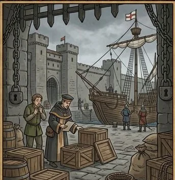
Ninguém sabia o que causava a doença nem como ela passava de uma pessoa para outra. Muitos fugiram das cidades; outros ficaram para cuidar dos doentes. Famílias foram separadas, faltaram padres, médicos e coveiros, e cemitérios de emergência precisaram ser abertos.
Os historiadores concordam que a Peste Negra transformou a sociedade medieval, embora discutam até que ponto ela causou essas mudanças ou apenas acelerou processos que já estavam em andamento.
Fato, estimativa ou interpretação? Neste site, indicamos quando uma informação é um fato bem documentado, uma estimativa (como o número de mortos) ou uma interpretação debatida pelos historiadores. As ilustrações são reconstruções artísticas. As referências estão em Fontes históricas.
Mapa interativo
Toque ou clique nas cidades para ver quando a doença chegou, ou acompanhe a disseminação ao longo do tempo.
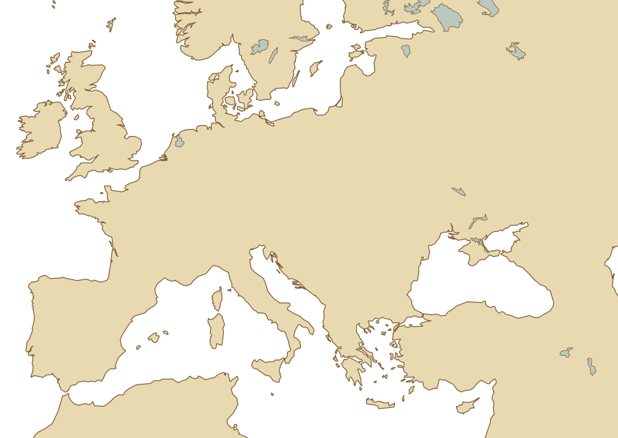
As datas indicam aproximadamente quando a peste chegou a cada local.
Mapa esquemático. Datas aproximadas, que variam conforme a fonte. Contornos: Natural Earth (domínio público).
Capítulo II
Por trás da Peste Negra estava um ser vivo invisível a olho nu: a Yersinia pestis.
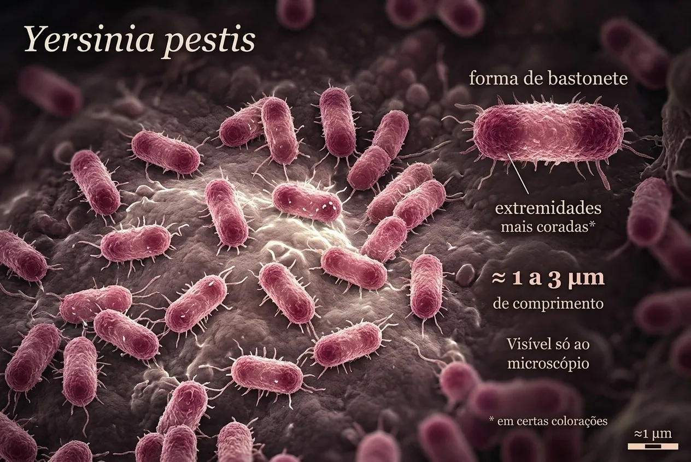
Bactérias são seres vivos formados por uma única célula, sem núcleo organizado. Existem bilhões delas no ambiente e no nosso corpo, e a maioria é inofensiva ou até útil. Algumas, porém, causam doenças.
É uma bactéria em forma de bastonete, com cerca de 1 a 3 micrômetros de comprimento — seriam necessárias centenas delas enfileiradas para cobrir um milímetro. Ela vive principalmente em roedores silvestres e em suas pulgas, que funcionam como reservatório natural. A doença que ela causa é uma zoonose: passa de animais para pessoas.
O nome homenageia Alexandre Yersin, que isolou a bactéria em 1894. Em 2011, a análise de DNA antigo de vítimas medievais confirmou que ela causou a Peste Negra.
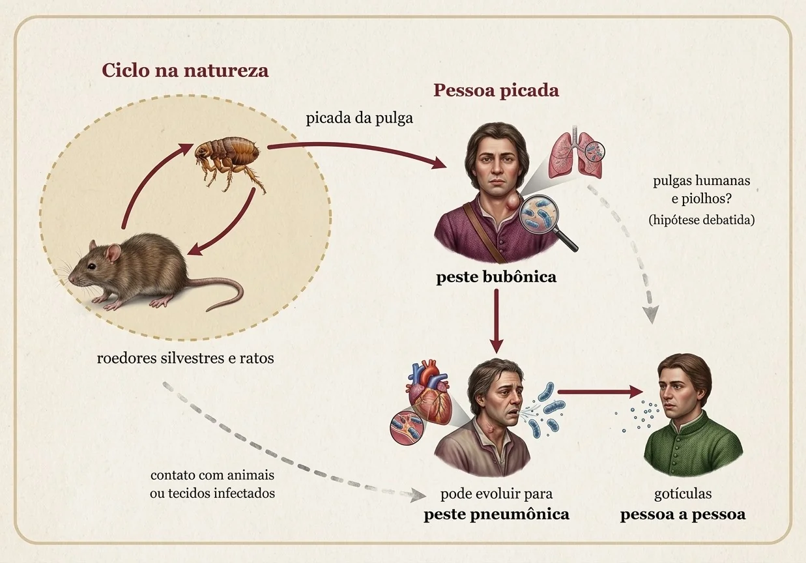
A forma mais comum de transmissão é a picada de pulgas infectadas. A pessoa também pode se infectar ao manusear animais doentes ou, no caso da forma pneumônica, ao respirar gotículas eliminadas por alguém doente.
E os ratos? Ratos e suas pulgas tiveram papel importante, mas não explicam tudo. Pesquisas recentes sugerem que pulgas humanas e piolhos podem ter contribuído para a rapidez dos surtos na Europa, e a forma pneumônica passava diretamente entre pessoas. O peso de cada via ainda é debatido pelos cientistas.
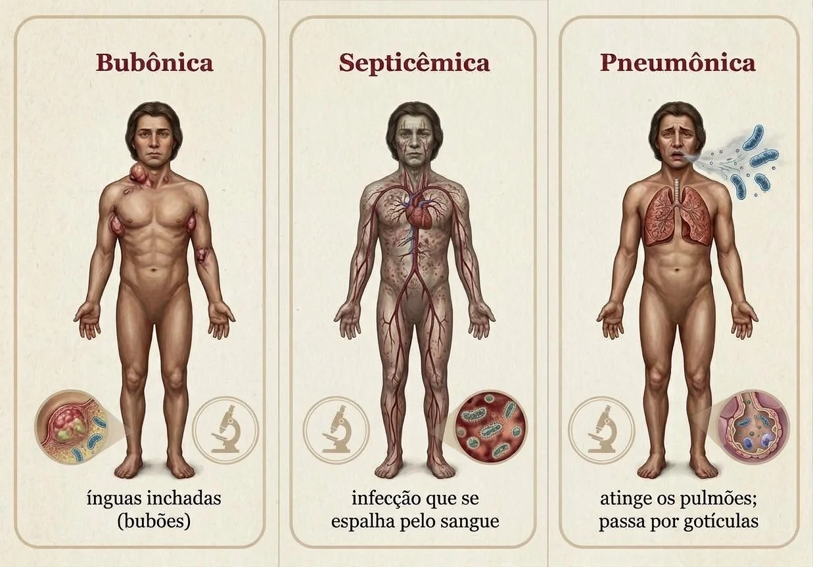
A mais comum. Após a picada da pulga, a bactéria chega aos linfonodos, que incham e formam os bubões. Causa febre, calafrios e fraqueza.
A bactéria se multiplica no sangue. Pode surgir sozinha ou como complicação da bubônica e provoca hemorragias e necrose de extremidades.
Atinge os pulmões. É a forma mais grave e a única que passa de pessoa para pessoa por gotículas respiratórias.
Capítulo III
Dos primeiros sinais na Ásia Central às pesquisas com DNA antigo. Selecione um marco para ler a explicação completa.
Carregando a linha do tempo…
Capítulo IV
Quem cuidava dos doentes, quem vendia remédios e quem buscava explicações para a tragédia? Cada ofício funcionava de modo diferente conforme a região e a época.
Carregando personagens…
Sobre as imagens: as figuras são reconstruções artísticas. Roupas e objetos foram inspirados em fontes históricas, mas não reproduzem pessoas reais nem valem igualmente para toda a Europa.
Capítulo V
Como era viver em uma cidade medieval quando a peste chegou? Escolha um tema.
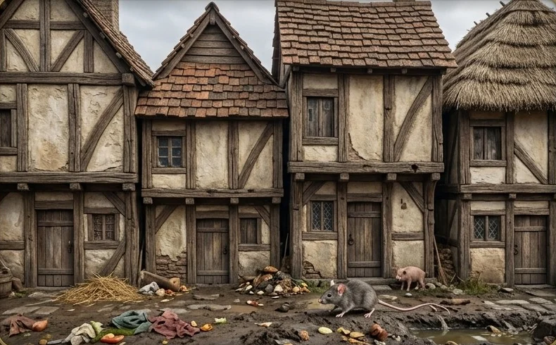
Nas cidades, as casas eram construídas muito próximas, com estrutura de madeira, paredes de taipa e telhados de palha ou telha. Famílias inteiras dividiam poucos cômodos, às vezes com animais.
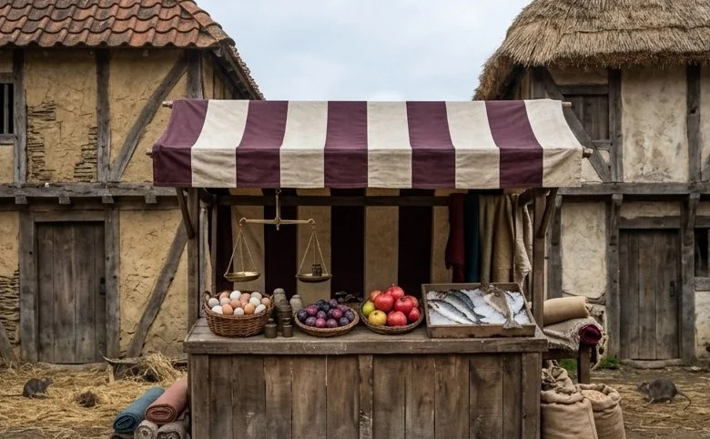
Os mercados reuniam camponeses, artesãos e mercadores de longe. Grãos, tecidos e outras mercadorias viajavam por terra e mar — e, sem que ninguém soubesse, levavam pulgas e ratos.
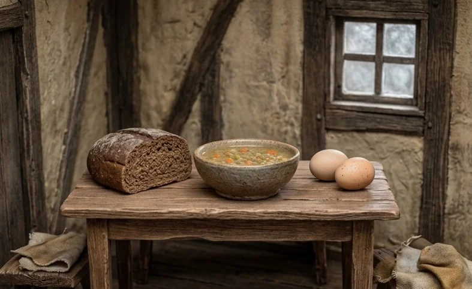
A base da dieta da maioria era o pão escuro, mingaus e sopas de cereais e legumes, com cebola, alho e, às vezes, queijo. Carne era mais comum nas mesas ricas.
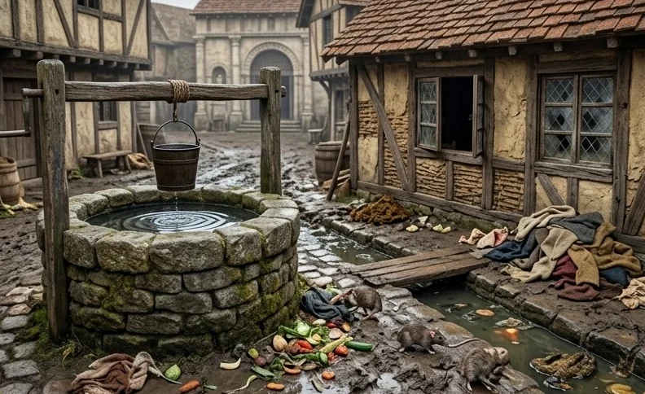
Ao contrário do que se costuma dizer, pessoas medievais se lavavam e muitas cidades tinham banhos públicos. Mas não havia saneamento como hoje: água de poços e rios, lixo nas ruas e dejetos lançados em valetas.
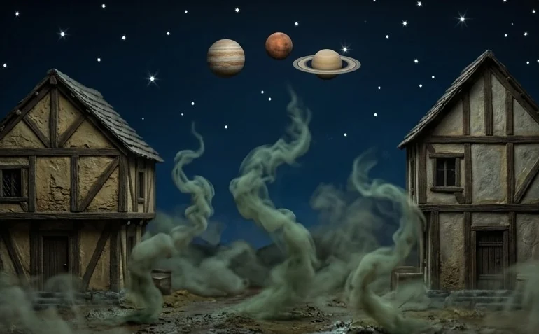
Sem microscópios, as pessoas buscavam explicações no que podiam observar e nas tradições da época.
Mesmo sem entender a causa, algumas cidades perceberam que o contato com doentes e viajantes espalhava a peste.
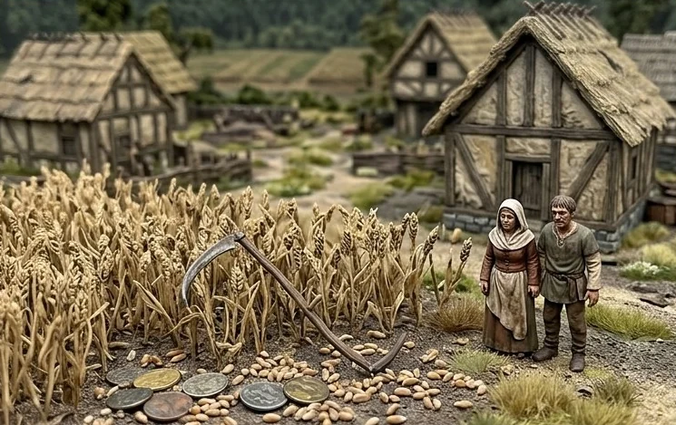
A epidemia deixou órfãos, viúvas e aldeias inteiras vazias. Cronistas relatam tanto o abandono de doentes por medo quanto gestos de cuidado e solidariedade.
Capítulo VI
Leia cada afirmação, pense na sua resposta e depois revele a explicação.
Carregando afirmações…
Aprenda jogando
Coloque seus conhecimentos à prova. Os jogos funcionam no navegador do celular, do tablet e do computador — sem instalar nada e sem cadastro.
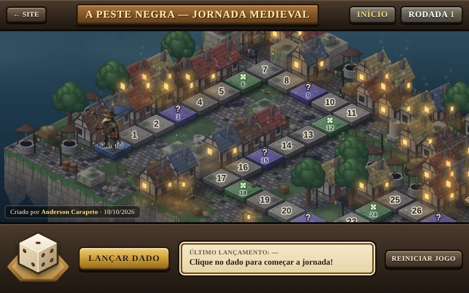
Jogo de tabuleiroUm jogo de percurso por uma cidade medieval em ruínas. Lance o dado, avance pelas 60 casas do tabuleiro, responda a desafios sobre a Peste Negra e enfrente cartas de Sorte ou Revés até chegar ao fim da jornada.
10 perguntas sorteadas a cada partida, com explicação em todas as respostas.
Fazer o quizAponte a câmera do celular e comece a jogar.
andevbr.github.io/peste_negra/jogos/jornada-medieval/